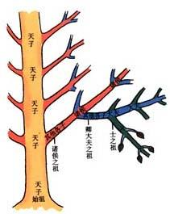

（本文默认读者具有相关历史知识。对，学校里面的历史课）
树链剖分，你可能已经知道了，适用于静态树结构上的路径操作。
这是一棵树。记总节点数为 N。

我们可以看到，这个树被剖分成了许多链：天子、诸侯等。每个链有一个祖。每个非叶节点有一个大宗和数个小宗，大宗等级与这个节点相同，小宗的低一级。用数字表示的话（其实我们下面代码一直用不到这个数），记节点 S 的等级为 L(S)，天子等级为 1，诸侯为 2，依此类推。另外，咱们假设等级任意多。
然后，我们把每个节点按 DFS 序放在线段树里，访问每个节点的子节点的时候，优先访问大宗。这样，每个链上的边是连续放置的。我们显然可以看出，每个节点 S 到达根节点的路径上，有 O(L(S)) 条链。为什么？因为每次 S 的祖上作为小宗的时候才会多一个链，而此时等级会少 1。这样，访问这条链的代价是 O(log N L(S))
那怎么才能使 L(S) 的最大值比较小呢？我们可以从选择大宗的方式入手。我们当然不要嫡长子了，这个没有用。我们要的是子节点数最大的。为什么这样选择？因为每次 S 的祖上作为小宗的时候，他会很清楚，在他以下的家族里的人数，最多和他兄弟家族的总人数相等，也就是从他的父亲下来到他，人数已经变为最多一半。这样，S 的祖上最多当 O(log N)次小宗。
struct E
{
int to, len;
E *next;
} ep[MAXN], *head[MAXN], *ept = ep;
inline void addEdge(int u, int v, int len)
{
head[u] = new(ept ++) E((E){v, len, head[u]});
head[v] = new(ept ++) E((E){u, len, head[v]});
}
void dfs(int i, int d)
{
depth[i] = d;
int nu = 1, maxsonid = 0, maxsonsize = -1;
for(E *p = head[i]; p; p = p->next)
if(! depth[p->to])
{
dfs(p->to, d+1);
parent[p->to] = i;
plen[p->to] = p->len;
nu += size[p->to];
if(maxsonsize < size[p->to])
maxsonid = p->to, maxsonsize = size[p->to];
}
size[i] = nu;
maxson[i] = maxsonid;
}
int wcnt;
void dfs2(int i, int t)
{
wcnt ++; w[i] = wcnt; rew[wcnt] = i; top[i] = t;
if(maxson[i])
{
dfs2(maxson[i], t);
for(E *p = head[i]; p; p = p->next)
if(! w[p->to]) dfs2(p->to, p->to);
}
}
int qsgt(int id, int a, int b);
int query(int a, int b)
{
int totlen = 0;
while(top[a] != top[b])
{
if(depth[top[a]] < depth[top[b]]) swap(a, b);
if(top[a] == a) totlen += qsgt(1, w[a], w[a]), a = parent[a];
else totlen += qsgt(1, w[top[a]] + 1, w[a]), a = top[a];
}
if(depth[a] < depth[b]) swap(a, b);
if(a != b)
totlen += qsgt(1, w[b]+1, w[a]);
return totlen;
}